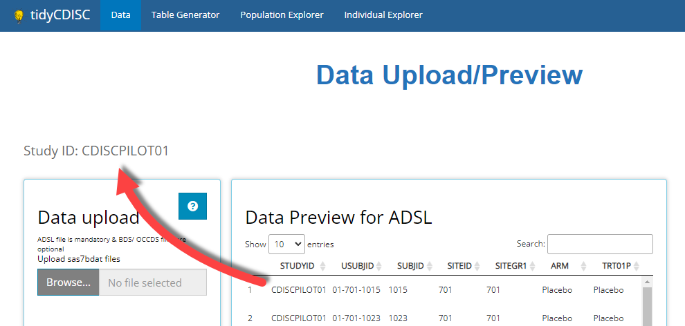
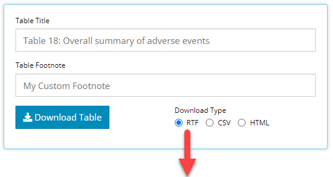
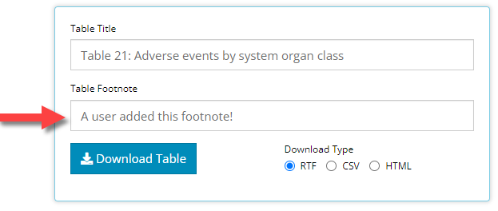
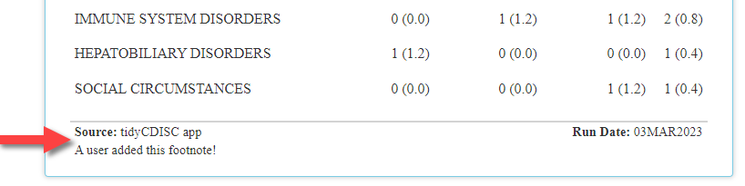
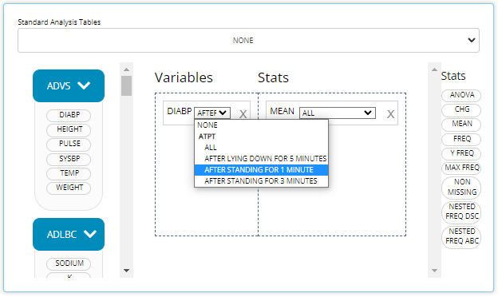
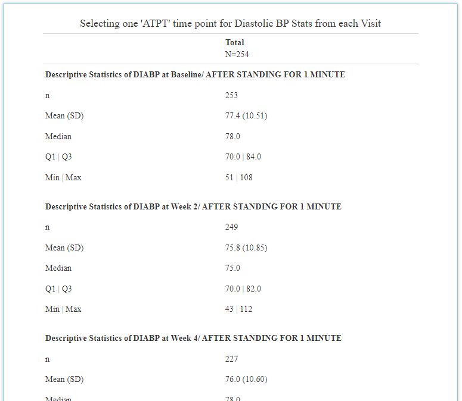
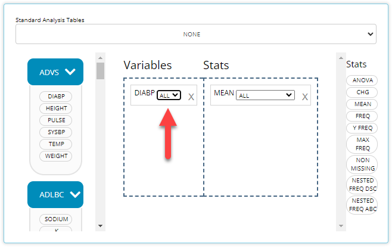
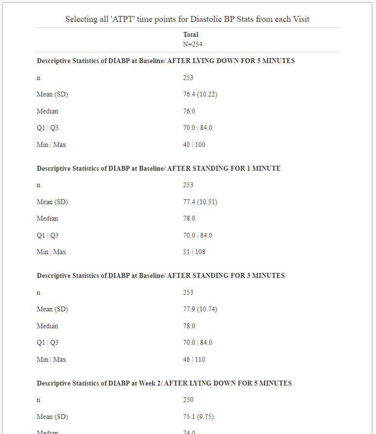

tidyCDISC 0.2.1 is out!
Source: vignettes/announcing-tidycdisc-0-2-1.Rmd
announcing-tidycdisc-0-2-1.RmdVersion 0.2.1 of tidyCDISC was released in March, 2023
and provides improvements to existing functionality, introduces new
features, and squashes some nasty bugs. As you’ll read, most of the
changes impact the the Table Generator.
Impacting all Modules/ Tabs
Study ID prominently displayed
After datasets are loaded into the application, the Study ID value is now displayed on each tab just above the content in the window. This quickly reminds the user of which study they’re analyzing, especially if they have multiple study analyses open at the same time!

Table Generator Enhancements
Reformatting outputs to look more CSR-like
This is an on-going effort that the tidyCDISC dev team
has prioritized. The table contains the exact same information as
before, but now it resembles what you’d expect a clinical trial CSR
output to look like. And overtime, it will get even better! Previously,
the output was littered with horizontal lines (as seen below) and
leveraged the same font as the rest of the application. However, now the
extra lines have been eradicated and “Times New Roman” font
leveraged.
Export tables to RTF
That’s right! Users can (finally) export any table as an RTF document. After you’ve perfected the design of your table in the app, select RTF as the Download Type and click on the Download Table button. It will ask you for the file name and location of the RTF document, and then you can open the document to view.


Options to further customize RTF output are currently limited, but the development team plans to add additional functionality in the future.
Footnotes!
You may have noticed in the example above, but all tables now
automatically receive a Source and Run Date
footnote and optionally, can contain a user-defined footnote. The latter
is rather straight forward: the new “Table footnote” field allows users
to slap a custom footnote onto the bottom of any table output. Just
update the text field with any content you want, and it will immediately
show up on the table.


Next, you can probably guess that all tables generated in the app
will now receive a Source and Run Date
footnote. The ’Run Date field is self-explanatory,
cataloging the date in which the analysis was run. Conversely, the
Source entry will vary depending on the context in which
the table was produced. For example, if the output was created and
downloaded in the application, the Source will always
display: “tidyCDISC app”. However, when the user doesn’t upload the
CDISC Pilot data and then a reproducible R script is downloaded and run
locally, Source will record the file location of the data
used to produce the output. Give it a try!
Break out by “analysis time point”
The table generator can now intelligently identify when your
BDS data contains more than one value (AVAL)
for any parameter (PARAM) and visit. This most frequently
happens in the presence of an analysis time point variable in the data
such as ATPT. The presence of ATPT-style
variables are common in ADVS and ADEG
datasets, to name a few. Prior to this enhancement, the values were
aggregated together but now you can actually display output for each
analysis time point measured during each visit. To take advantage, watch
for a new dropdown that appears on your variable blocks after they’ve
been placed in the drop zone.
Below is an example when ATPT exists in the uploaded
ADVS data. When applicable, you can select “NONE” to revert
to the old behavior of aggregating all time points, i.e. avoiding the
breakdown by time point. Conversely, you can select one specific time
point to display that measurement at each visit. Below, we select the
“After standing for 1 minute” time point and displaying “All” visits in
our MEAN stat block:


Last, selecting “ALL” will display output for each time point value available. In the example below example, that would produce a table containing a descriptive statistics on diastolic blood pressure while (1) lying down for 5 minutes, (2) after standing for 1 minute, and again (3) after standing for 3 minutes. Notice how these three outputs are created for each visit:


Simplified function call to reproduce tables
If you’re using tidyCDISC as an R script generator for
reproducing your favorite tables, then your R files just got a little
cleaner. We’ve engineered a user-friendly function called
tidyCDISC::tg_gt() that consolidates a lot of the code used
to easily generate a table from the “block data”. If you don’t know what
block data is, it’s basically just configuration data.frame you’ve
developed via the drag and drop interface in the app. In other words,
“Block data” tells tidyCDISC how to build the table, but
don’t worry about it too much for now. The next release of
tidyCDISC will include code that helps users manually
create “block data” in a lot more intuitive way.
For more information on this releases’ new function, run
?tidyCDISC::tg_gt in your R console AND download an R
script from the app to see it in action.
Other enhancements
Added
OS Healthandriskmetricbadges to theREADMEAdded an app.R file so that the Shiny app can be run directly from
shiny::runGitHub()orrunUrl()Populate Table title automatically when a “standard analysis” is selected
“ALL” is now the default visit selection for standard analysis 41
Fixed bug within filtering module on the Population Explorer. Columns for non-selected datasets would display erroneously
Fixed bug where an incorrect variable was listed as a valid grouping option in the Population Explorer
Fixed bug accessing files in “app/www/”
Contributions On the horizon
There’s still a long list of improvements we can make to
tidyCDISC to help users incorporate into existing workflows
within their respective companies. The end goal is to continue to
develop tidyCDISC until it’s users can’t help but “fall
into a pit of success”.
So we want to hear from you! Does tidyCDISC not work for
you? then tell us
why. Is there something different about the way you (or your
company) handles certain tables / analyses? We want to know about it. Do
you have a passion to see clinical trials analysis in R come to fruition
in the next few years? Help us shape the process. Do you want to advance
the industry forward by contributing to an open source project? Become a
tidyCDISC developer!
Whether you have time to contribute code to the project or not, we appreciate your feedback. We’d love to hear about any issues or improvements you’d like to see in the app by opening an issue in GitHub!
Enjoy the new release!